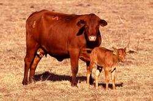

 Africander
Africander
Origem: África do Sul.
De tamanho médio, pele solta e orelhas compridas. Boa tolerância a altas temperaturas.
AfricanderOrigem: África do Sul.
De tamanho médio, pele solta e orelhas compridas. Boa tolerância a altas temperaturas.

 Alberes
AlberesOrigem: França e Espanha.
Raça semi-selvagem, rústica. Resistente ao frio, mas sensível ao calor.
 Alentejana
AlentejanaOrigem: Portugal.
Raça antiga. Pelagem do amarelo ao vermelho dourado e chifres compridos.
 Allmogekor
AllmogekorOrigem: Sul da Suécia.
Resistente e bem adaptada. Dócil e aproveita bem forragens de baixa qualidade.
 Angus
AngusOrigem: Escócia.
Gado rústico, mocho (sem chifres). Alta fertilidade e habilidade materna.
Origem: África.
Famosa por seus enormes chifres. Resistentes a pastagens de baixa qualidade.
BazadaiseOrigem: Sudoeste da França.
Boa estrutura muscular e grande rusticidade.
 Beefalo
BeefaloOrigem:s Cruzamento (EUA).
Cruzamento de bisão com gado doméstico.

 Belgian Red
Belgian RedOrigem: Bélgica.
Vermelhos, com algumas manchas brancas.

 Blanco Orejinegro
Blanco OrejinegroOrigem: Colômbia.
Adaptável a zonas montanhosas.
 Boran
BoranOrigem: Quênia.
Resistência ao calor e parasitas.


 Borneo Banteng
Borneo BantengOrigem: Bornéu.
Temperamento selvagem.
BrafordOrigem: Cruzamento (EUA).
Cruzamento de Brahman e Hereford.
BrahmanOrigem: Estados Unidos.
Resistência a altas temperaturas.
BrangusOrigem: Estados Unidos.
3/8 Brahman e 5/8 Angus.
BravaOrigem: Península Ibérica.
Selecionada por sua agressividade e força.
 Braunvieh
BraunviehOrigem: Suíça.
Boa para leite e engorda.
 Bretonne Pie-Noire
Bretonne Pie-NoireOrigem: França.
A menor das raças francesas.

 British White
British WhiteOrigem: Grã-Bretanha.
Temperamento dócil, pelo branco com pontos pretos.
 British White Park
British White ParkOrigem: Grã-Bretanha.
Temperamento dócil e boa fertilidade.
CachenaOrigem: Espanha.
Pequenos, com chifres grandes, carne de alta qualidade.
 Canadense
CanadenseOrigem: Canadá.
Adapta-se a diferentes climas, produz bom leite.
 Canchim
CanchimOrigem: Brasil.
Cruzamento de Charolês e Nelore. Rústico.
CaracuOrigem: Brasil.
Bos taurus adaptado ao trópico.
CharolêsOrigem: França.
Musculatura desenvolvida. Grande tamanho.
 Chianina
ChianinaOrigem: Itália.
Uma das maiores raças do mundo.
CorrienteOrigem: Estados Unidos.
Utilizada para rodeios. Pequenos e atléticos.

 Criollo Lechero
Criollo LecheroOrigem: Nicarágua.
Grande produtor de leite na América Latina.
 Crioulo Lageano
Crioulo LageanoOrigem: Brasil.
Adaptado a regiões frias do Brasil.
CurraleiroOrigem: Brasil.
Adaptado a climas semi-áridos, rústico.

 Danish Red
Danish RedOrigem: Dinamarca.
Raça de grande porte para produção mista.
DevonOrigem: Inglaterra.
Cor vermelha. Férteis, dóceis e adaptáveis.
 Dexter
DexterOrigem: Irlanda.
Adaptada a diferentes climas. Pequenos.
 Gelbvieh
GelbviehOrigem: Alemanha.
Vacas são excelentes mães.
 Gir
GirOrigem: Índia.
Vigorosos e com boa musculatura.
 Gir Leiteiro
Gir LeiteiroOrigem: Índia.
Excelente produção de leite.
GirolandoOrigem: Brasil.
Cruzamento de Gir e Holstein.
 Guernsey
GuernseyOrigem: Guernsey (Inglaterra).
Leite de alta qualidade.
GuzeráOrigem: Índia.
Dupla aptidão (leite e carne).
HerefordOrigem: Inglaterra.
Importante raça de carne.
HighlandOrigem: Escócia.
Pelo longo e avermelhado.
 Holstein
HolsteinOrigem: Holanda.
Destaque mundial em leite.
 Horro
HorroOrigem: Etiópia.
Possui giba, utilizada para carne.
 Icelandic
IcelandicOrigem: Islândia.
Pequena, selecionada pelo leite.
 Illawara
IllawaraOrigem: Austrália.
Grande produtora de leite.
IndubrasilOrigem: Brasil.
Excelente produtora de carne.
JunqueiraOrigem: Brasil.
Raça crioula de dupla aptidão.
 Katerini
KateriniOrigem: Grécia.
Dupla aptidão (leite e carne).
LimpurgerOrigem: Alemanha.
Tripla finalidade (leite, carne, carga).
 Lincoln Red
Lincoln RedOrigem: Grã-Bretanha.
Eficiente e de maturação rápida.
 Lohani
LohaniOrigem: Paquistão.
Pequena, vermelha com manchas brancas.
LourdaiseOrigem: França.
Animal de trabalho e leite.
LowlineOrigem: Austrália.
Derivada do Angus, para carne.
MarchigianaOrigem: Itália.
Criada para carne, grande adaptabilidade.
 Mocho Nacional
Mocho NacionalOrigem: Brasil.
Criada para tração e carne. Longeva.
 Morucha
MoruchaOrigem: Espanha.
Apta para produção de carne extensiva.
 Murray Grey
Murray GreyOrigem: Austrália.
Para produção de carne.
NeloreOrigem: Índia.
Pele preta, resistente ao sol.
NormandoOrigem: Normandia, França.
Dupla utilidade (leite e carne).
 Original Braunvieh
Original BraunviehOrigem: Suíça.
Dupla aptidão (carne e leite).
PantaneiroOrigem: Brasil.
Adaptado ao Pantanal.
PardaOrigem: Espanha.
Leiteira com bom rendimento de carne.
 Parda de Montanha
Parda de MontanhaOrigem: Espanha.
Para produção de carne.
 Pardo Suíço
Pardo SuíçoOrigem: Suíça.
Leite com altos teores de sólidos.
RandallOrigem: Estados Unidos.
Tripla finalidade (carne, leite, tração).
 Red Brangus
Red BrangusOrigem: Estados Unidos.
Combina Brahman e Angus.
 Red Friesian
Red FriesianOrigem: Holanda.
Variedade vermelha e branca da Frísia.
 Red Poll
Red PollOrigem: Inglaterra.
Sem chifres, dupla finalidade.
RetintaOrigem: Espanha.
Dupla aptidão (carne e trabalho).
SalersOrigem: França.
Considerada a melhor vaca ama-de-leite.
 Santa Gertrudis
Santa GertrudisOrigem: Estados Unidos.
Cruzamento de Brahman e Shorthorn.
ShorthornOrigem: Grã-Bretanha.
Variedades para carne e leite.
TabapuãOrigem: Brasil.
Para produção de carne.
TarentaiseOrigem: Estados Unidos.
Para produção de leite.
 Texas Longhorn
Texas LonghornOrigem: Estados Unidos.
Chifres grandes e longos.
 Tropicarne
TropicarneOrigem: México.
Cor vermelha característica.
 Wagyu
WagyuOrigem: Japão.
Carne apreciada por sua textura e sabor.
YakOrigem: Tibete.
Utilizada para transporte, arado, carne, pele e leite.